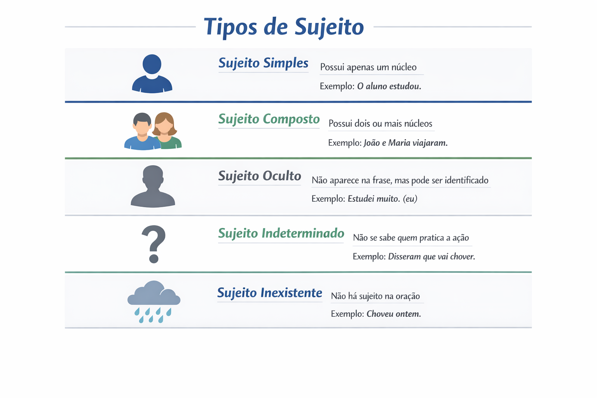

Tipos de sujeito: quais são, exemplos e como identificar
Os tipos de sujeito ajudam a compreender como as orações são organizadas, como os referentes são apresentados ou omitidos e como se estabelece a concordância verbal.
Para identificar o sujeito, não basta procurar uma pessoa que pratique uma ação. Em “As provas foram corrigidas”, por exemplo, as provas é o sujeito, embora receba a ação. Já em “Há provas sobre a mesa”, a oração não apresenta sujeito.
Neste guia, você estudará sujeito simples, composto, oculto e indeterminado, além das orações sem sujeito. Também encontrará comparações, exemplos analisados e um quiz com gabarito comentado.

O que é sujeito?
Na análise sintática escolar, o sujeito é um termo que se relaciona com o predicado e normalmente estabelece com o verbo uma relação de concordância em pessoa e número.
A definição tradicional de sujeito como “aquilo sobre o que se declara alguma coisa” pode ajudar inicialmente, mas precisa ser acompanhada da análise da estrutura. O assunto de uma conversa não corresponde necessariamente ao sujeito gramatical de cada oração.
Os estudantes da turma revisaram o conteúdo.
- Sujeito: os estudantes da turma.
- Núcleo do sujeito: estudantes.
- Predicado: revisaram o conteúdo.
- Concordância: “revisaram” está no plural, em relação ao sujeito.
O sujeito é sempre quem pratica a ação?
Não. A função sintática de sujeito não deve ser confundida com o papel semântico de agente.
- A professora corrigiu os textos. — O sujeito atua como agente.
- Os textos foram corrigidos pela professora. — O sujeito é paciente.
- A professora estava cansada. — O sujeito recebe uma caracterização.
- O aluno sentiu medo. — O sujeito é apresentado como experienciador de um sentimento.
Perguntar apenas “quem pratica a ação?” pode levar a erros, especialmente na voz passiva e em orações que expressam estados ou sentimentos.
O que é o núcleo do sujeito?
O núcleo é o elemento central de um sujeito nominal. Frequentemente é um substantivo, um pronome substantivo ou uma palavra substantivada.
As novas propostas dos estudantes foram aprovadas.
- Sujeito completo: as novas propostas dos estudantes.
- Núcleo: propostas.
- Dos estudantes: expressão ligada ao núcleo, sem constituir outro núcleo coordenado do sujeito.
O tamanho do sujeito e a quantidade de substantivos presentes nele não determinam, isoladamente, sua classificação. É preciso reconhecer a organização interna do termo.
Quais são os tipos de sujeito?
Na classificação escolar, estudam-se os sujeitos simples, composto, oculto e indeterminado, além das orações sem sujeito, frequentemente apresentadas sob a denominação “sujeito inexistente”.
Esses nomes consideram critérios diferentes: quantidade de núcleos, expressão ou omissão do termo e possibilidade de identificar sua referência.
1. Sujeito simples
O sujeito simples apresenta apenas um núcleo, ainda que esse núcleo esteja no plural ou venha acompanhado de várias palavras.
- A estudante apresentou o trabalho. — Núcleo: estudante.
- Os estudantes apresentaram o trabalho. — Núcleo: estudantes.
- Todos os estudantes da escola participaram. — Núcleo: estudantes.
- Nós participamos. — Núcleo: nós.
Plural não significa sujeito composto
Em “Os professores chegaram”, o sujeito é simples: há apenas o núcleo professores. O plural informa número, não quantidade de núcleos.
Um substantivo coletivo também pode constituir sujeito simples: “A turma participou”. Embora a turma reúna várias pessoas, o núcleo é um só: turma.
O sujeito simples pode aparecer depois do verbo
Chegaram os novos materiais.
- Sujeito: os novos materiais.
- Núcleo: materiais.
- Classificação: sujeito simples posposto.
A posição posterior ao verbo não transforma o sujeito em objeto. Compare: “Chegou o material” e “Chegaram os materiais”.
2. Sujeito composto
O sujeito composto apresenta dois ou mais núcleos coordenados, vinculados ao mesmo predicado.
- A professora e os alunos organizaram a atividade.
- Livros, cadernos e lápis estavam sobre a mesa.
- Eu e você participaremos da reunião.
No primeiro exemplo, os núcleos são professora e alunos. No segundo, são livros, cadernos e lápis.
Nem toda ocorrência de “e” indica sujeito composto
Sujeito simples
A professora de História e Geografia chegou.
Há uma professora, caracterizada pelas disciplinas. O núcleo do sujeito é “professora”.
Sujeito composto
A professora de História e o professor de Geografia chegaram.
Há dois núcleos coordenados: “professora” e “professor”.
Concordância com sujeito composto
Com sujeito composto anteposto e núcleos ligados por “e”, a concordância no plural é a construção geral: “A diretora e os professores participaram”.
Quando o sujeito composto aparece depois do verbo, a norma-padrão admite, em determinados contextos, concordância no plural ou com o núcleo mais próximo: “Chegaram a diretora e os professores” ou “Chegou a diretora e os professores”. A posição do sujeito, portanto, exige atenção.
3. Sujeito oculto, elíptico ou desinencial
O sujeito oculto não aparece expresso na oração, mas sua referência pode ser recuperada pela flexão verbal ou pelo contexto.
- Cheguei cedo. — Sujeito recuperável: eu.
- Estudamos bastante ontem. — Sujeito recuperável: nós.
- Ana recebeu o texto e revisou a introdução. — Na segunda oração, o sujeito omitido é Ana.
As denominações variam entre gramáticas. “Desinencial” costuma destacar a recuperação pela flexão; “elíptico” e “oculto” são frequentemente empregados de maneira mais ampla no ensino escolar.
“Chegaram atrasados” sempre tem sujeito oculto?
Não. Isoladamente, essa frase não informa necessariamente quais pessoas chegaram. É preciso observar a situação comunicativa.
Referência recuperável
Os convidados enfrentaram trânsito. Chegaram atrasados.
Na segunda oração, o sujeito oculto retoma “os convidados”.
Sem referência específica recuperável
Disseram coisas falsas sobre a escola.
Sem antecedente ou identificação contextual de quem disse, a terceira pessoa do plural pode indeterminar o sujeito.
Reconhecer a terceira pessoa do plural não equivale a identificar um referente. Acrescentar mentalmente “eles” não basta para comprovar sujeito oculto.
4. Sujeito indeterminado
O sujeito indeterminado ocorre quando a construção não identifica um referente específico para essa função. O falante pode desconhecê-lo, preferir não mencioná-lo ou fazer uma afirmação de alcance geral.
Verbo na terceira pessoa do plural
Uma das construções mais estudadas apresenta verbo na terceira pessoa do plural, sem sujeito expresso e sem referência recuperável no contexto.
- Disseram que o atendimento começará mais tarde.
- Telefonaram durante a reunião.
- Publicaram informações incorretas sobre o caso.
Essa classificação depende da ausência de um referente identificável. Se o texto informar anteriormente quem telefonou ou publicou, a análise poderá ser de sujeito oculto.
Verbo na terceira pessoa do singular com “se”
Na análise tradicional, o índice de indeterminação do sujeito aparece com o verbo na terceira pessoa do singular em construções como:
- Vive-se bem aqui. — Verbo intransitivo.
- Precisa-se de voluntários. — Verbo transitivo indireto.
- É-se mais cuidadoso com a experiência. — Verbo de ligação.
Por que se escreve “precisa-se de voluntários”?
No sentido de necessitar, o verbo precisar exige a preposição de. A expressão de voluntários funciona como objeto indireto, e não como sujeito.
Precisa-se de voluntários.
- precisa: verbo na terceira pessoa do singular;
- se: índice de indeterminação do sujeito;
- de voluntários: objeto indireto;
- sujeito: indeterminado.
Na norma-padrão, o plural do complemento não provoca a flexão do verbo: emprega-se “precisa-se de voluntários”, e não “precisam-se de voluntários”.
“Vendem-se livros” ou “precisa-se de voluntários”?
A palavra se não tem a mesma função nas duas construções. Para diferenciá-las, observe a transitividade verbal e a possibilidade de uma estrutura passiva.
| Construção | Função de “se” | Análise do sujeito | Concordância |
|---|---|---|---|
| Vendem-se livros. | Partícula apassivadora | “Livros” é sujeito simples paciente. | O verbo concorda com “livros”. |
| Precisa-se de livros. | Índice de indeterminação do sujeito | Sujeito indeterminado. | O verbo permanece no singular. |
O teste da voz passiva
Na análise normativa tradicional, “Vendem-se livros” corresponde a “Livros são vendidos”. O sujeito é livros, e quem vende não é identificado.
Já “Precisa-se de livros” não corresponde a “Livros são precisados” no sentido de necessitar. A construção apresenta sujeito indeterminado.
Agente não identificado não significa automaticamente sujeito indeterminado. Em “Vendem-se livros”, o agente da venda não é mencionado, mas o sujeito paciente está expresso.
5. Oração sem sujeito ou sujeito inexistente
A oração sem sujeito apresenta um verbo empregado impessoalmente. Nesse caso, não há um sujeito omitido à espera de identificação.
A expressão “sujeito inexistente” é comum nos materiais escolares. “Oração sem sujeito” explicita que se trata da ausência dessa função, e não de uma pessoa desconhecida.
Haver com sentido de existir ou ocorrer
- Há muitas dúvidas.
- Havia três estudantes na sala.
- Houve mudanças no calendário.
Nesses empregos, haver é impessoal e permanece na terceira pessoa do singular. Na análise tradicional, muitas dúvidas, três estudantes e mudanças são objetos diretos.
Haver não é igual a existir na estrutura sintática
Haver: impessoal
Havia muitas dúvidas.
Oração sem sujeito; verbo no singular.
Existir: pessoal
Existiam muitas dúvidas.
“Muitas dúvidas” é sujeito simples; verbo no plural.
A aproximação de sentido não produz identidade de análise sintática. O mesmo contraste aparece entre “Houve problemas” e “Ocorreram problemas”.
Fazer e haver indicando tempo decorrido
- Faz dois anos que trabalho aqui.
- Havia meses que não nos encontrávamos.
Nas orações em que esses verbos indicam tempo decorrido, eles são impessoais. Por isso, na norma-padrão, emprega-se “faz dois anos”, e não “fazem dois anos”.
Não se deve estender a impessoalidade a todo verbo relacionado ao tempo: em “Dois anos passaram”, o sujeito é dois anos.
Fenômenos da natureza em sentido literal
- Choveu durante a madrugada.
- Trovejou muito ontem.
- Nevou naquela região.
Nesses usos literais, os verbos são tradicionalmente classificados como impessoais. Em usos figurados, podem apresentar sujeito:
Choveram críticas à proposta.
“Críticas” é sujeito simples posposto. O verbo foi empregado figuradamente e concorda no plural.
Fazer indicando condições atmosféricas
Em “Faz frio nesta época” e “Fez muito calor ontem”, fazer também é empregado impessoalmente.
Ser na indicação de horas
Na análise tradicional, construções como “É uma hora” e “São duas horas” são orações sem sujeito. Nesse emprego, ser apresenta concordância especial com a expressão indicadora das horas.
A maioria dos casos impessoais estudados mantém o verbo no singular, mas a indicação de horas com ser exige atenção: “São duas horas” continua sendo oração sem sujeito na análise tradicional.
O que acontece com os verbos impessoais nas locuções?
Com haver no sentido de existir, ou fazer indicando tempo decorrido, a impessoalidade alcança o auxiliar da locução.
- Deve haver novas oportunidades.
- Pode haver mudanças.
- Vai fazer dois anos que ele se mudou.
Com verbos pessoais, há concordância com o sujeito:
- Devem existir novas oportunidades.
- Podem ocorrer mudanças.
O contraste mostra por que é necessário analisar o verbo principal, e não apenas a palavra plural que aparece depois dele.
Sujeito indeterminado e oração sem sujeito: qual é a diferença?
Sujeito indeterminado
Telefonaram durante a reunião.
Sem referência recuperável, a construção não identifica quem telefonou.
Oração sem sujeito
Houve uma reunião.
Haver está empregado impessoalmente. Não existe sujeito a ser recuperado.
No primeiro caso, há indeterminação da referência do sujeito. No segundo, a estrutura não apresenta essa função sintática.
O sujeito pode ser uma oração?
Sim. Uma oração inteira pode exercer a função de sujeito de outra. É o caso do sujeito oracional.
É importante revisar o texto.
“Revisar o texto” exerce a função de sujeito de “é importante”. A estrutura corresponde a: “Isso é importante”.
Essa classificação considera a forma de realização do sujeito, não apenas o número de núcleos de um grupo nominal. O exemplo também mostra que a presença de ser não torna uma oração automaticamente impessoal.
Sujeito, agente da passiva e vocativo
Termos relacionados a pessoas podem exercer funções distintas. Compare:
- A professora revisou o texto. — Sujeito agente.
- O texto foi revisado pela professora. — “O texto” é sujeito paciente; “pela professora” é agente da passiva.
- Professora, revise o texto. — “Professora” é vocativo; o sujeito não expresso do imperativo corresponde a você.
O vocativo chama o interlocutor e não constitui sujeito. A pontuação ajuda a reconhecer essa diferença.
Como identificar o sujeito passo a passo?
- Localize o verbo ou a locução verbal.
- Verifique se o emprego é impessoal: observe haver existencial, fazer temporal e os demais casos.
- Procure o termo relacionado ao verbo: ele pode aparecer antes ou depois.
- Examine a concordância: use-a como pista, sem ignorar os casos especiais.
- Identifique o sujeito completo e seus núcleos.
- Se não houver termo expresso, consulte o contexto: a referência é recuperável ou indeterminada?
- Nas construções com “se”, analise sua função: nem todo “se” indetermina o sujeito.
Exemplo de análise completa
Foram entregues aos estudantes os novos materiais da biblioteca.
- Locução verbal: foram entregues.
- Voz: passiva analítica.
- Sujeito: os novos materiais da biblioteca.
- Núcleo: materiais.
- Classificação: sujeito simples, expresso e posposto.
- Papel semântico: paciente.
- Aos estudantes: objeto indireto, indicando destinatário.
Os estudantes participam da situação como destinatários, mas não são o sujeito. A concordância da locução ocorre com os novos materiais da biblioteca.
Erros frequentes na identificação do sujeito
- Confundir plural com sujeito composto: “os alunos” apresenta apenas um núcleo.
- Procurar o sujeito somente antes do verbo: em “surgiram dúvidas”, “dúvidas” é sujeito.
- Confundir sujeito e agente: o sujeito da passiva recebe a ação.
- Classificar toda terceira pessoa do plural como indeterminada: o contexto pode fornecer a referência.
- Classificar toda terceira pessoa do plural como oculta: a flexão não identifica, sozinha, quem é o referente.
- Pluralizar “precisa-se de”: na norma-padrão, o verbo permanece no singular nessa construção.
- Indeterminar o sujeito de “vendem-se livros”: na análise normativa, “livros” é sujeito paciente.
- Tratar haver e existir como sintaticamente iguais: “há dúvidas”, mas “existem dúvidas”.
- Confundir vocativo com sujeito: chamar alguém não equivale a nomear o sujeito da oração.
- Separar sujeito e predicado por vírgula sem justificativa: a extensão do sujeito não autoriza essa separação.
Quiz sobre tipos de sujeito
Marque uma alternativa por questão. Considere a análise tradicional e a norma-padrão nos casos de concordância.
1. Em “Todos os estudantes da escola participaram”, o sujeito é:
2. Em “Chegaram à biblioteca os novos livros”, o sujeito é:
3. Em “As pesquisadoras receberam os dados. Depois, organizaram as tabelas”, o sujeito de “organizaram” é:
4. Sem antecedente ou identificação contextual de quem realizou a ação, a oração “Telefonaram durante a reunião” apresenta:
5. Em “Precisa-se de profissionais experientes”, a análise correta é:
6. Segundo a análise normativa tradicional, em “Alugam-se salas comerciais”:
7. Em qual alternativa há oração sem sujeito?
8. Em “As provas foram corrigidas pela professora”, o sujeito e seu papel semântico são:
9. Assinale a alternativa com sujeito composto.
10. Qual alternativa apresenta concordância adequada à norma-padrão?
Resumo dos tipos de sujeito
| Classificação | Característica | Exemplo |
|---|---|---|
| Simples | Apresenta um núcleo. | Os estudantes chegaram. |
| Composto | Apresenta dois ou mais núcleos coordenados. | Ana e Pedro chegaram. |
| Oculto | Não está expresso, mas sua referência é recuperável. | Chegamos cedo. Sujeito: nós. |
| Indeterminado | A construção não identifica um referente específico. | Precisa-se de ajuda. |
| Oração sem sujeito | Apresenta verbo empregado impessoalmente. | Há muitas dúvidas. |
Conclusão
Identificar o sujeito exige combinar estrutura sintática, concordância e contexto. A posição do termo, seu número e seu papel de agente ou paciente não bastam, isoladamente, para determinar a classificação.
Ao analisar uma oração, localize o verbo, verifique se ele é impessoal, procure o sujeito completo e observe seus núcleos. Se o sujeito não estiver expresso, examine a possibilidade de recuperá-lo. Nas construções com “se”, diferencie a indeterminação da voz passiva.
Perguntas frequentes sobre tipos de sujeito
Quais são os tipos de sujeito?
Na classificação escolar, estudam-se sujeito simples, composto, oculto e indeterminado, além das orações sem sujeito, também chamadas de casos de sujeito inexistente.
Um sujeito no plural é sempre composto?
Não. A classificação depende do número de núcleos. “Os alunos” é um sujeito simples porque apresenta apenas o núcleo “alunos”.
Como diferenciar sujeito oculto e indeterminado?
No sujeito oculto, a referência é recuperável pela flexão verbal ou pelo contexto. No indeterminado, a construção não permite identificar um referente específico.
O correto é precisa-se ou precisam-se de voluntários?
Na norma-padrão, emprega-se “precisa-se de voluntários”. O sujeito é indeterminado, o “se” é índice de indeterminação e “de voluntários” é objeto indireto.
Qual é o sujeito de “Há muitas dúvidas”?
A oração não possui sujeito. Haver com sentido de existir é impessoal, e “muitas dúvidas” funciona como objeto direto na análise tradicional.
Continue estudando Gramática
Referências e leituras de aprofundamento
- BECHARA, Evanildo. Moderna gramática portuguesa. Rio de Janeiro: Nova Fronteira.
- CUNHA, Celso; CINTRA, Lindley. Nova gramática do português contemporâneo. Rio de Janeiro: Lexikon.
- CEGALLA, Domingos Paschoal. Novíssima gramática da língua portuguesa. São Paulo: Companhia Editora Nacional.
- ROCHA LIMA, Carlos Henrique da. Gramática normativa da língua portuguesa. Rio de Janeiro: José Olympio.
Explore Outros Conteúdos
Continue seus estudos acessando outras seções do site Mestre Kira: